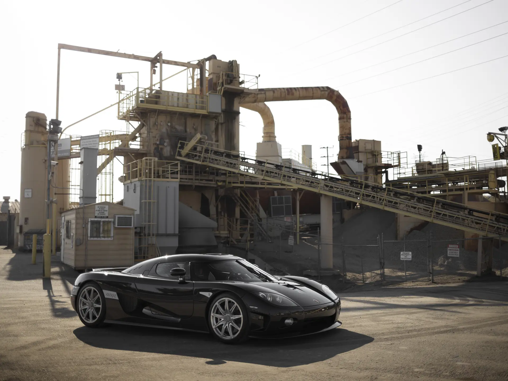
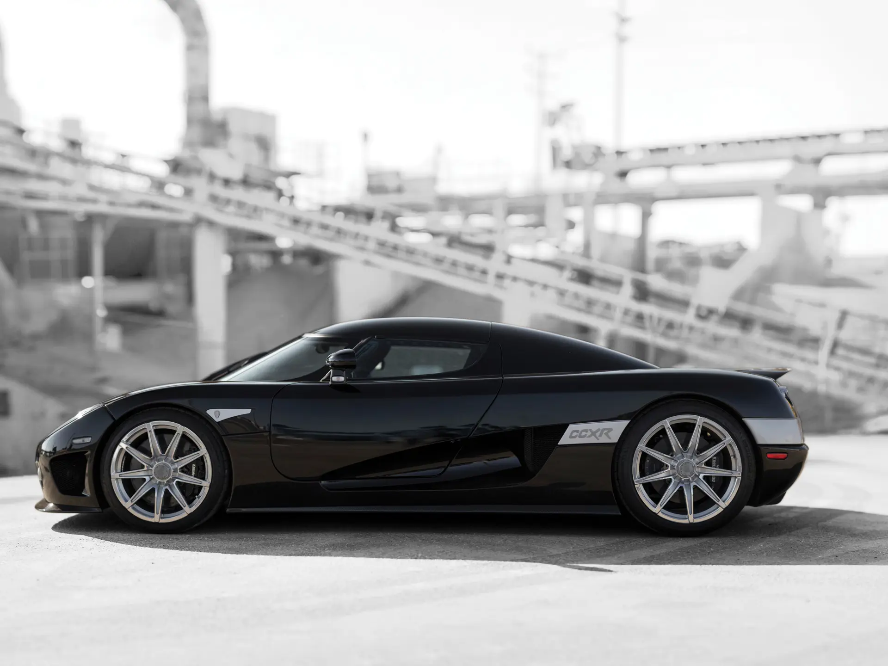

The Koenigsegg CCXR played a key role in the early hypercar speed battles, helping push performance to new extremes while establishing Koenigsegg as a serious competitor on the global stage. Building on the CCX, the CCXR introduced significant advancements in both power and engineering.
At its core was Koenigsegg’s first in-house developed engine, a 4.8-litre twin-supercharged V8 capable of producing over 1,000 horsepower when running on E85 biofuel. This made the CCXR one of the first hypercars to combine extreme performance with alternative fuel capability, increasing both output and efficiency in the process.

The car also brought meaningful improvements over the standard CCX, including a more refined interior, upgraded cooling systems, and enhanced aerodynamics to handle the increased performance. In terms of recognition, the CCXR was listed among the world’s most powerful production cars and contributed to Koenigsegg’s rise during a period defined by record-breaking speed attempts and rivalry at the top end of the automotive world, all the while, featuring a 6-speed manual transmission.
| Engine | 4.8L Twin-Supercharged V8 |
| Power | 1018bhp |
| Weight | 1380kg |
| Transmission | 6-speed Manual |
| 0-62 | 3.1 s |
| Top Speed | 250mph |
| Year | 2007 |